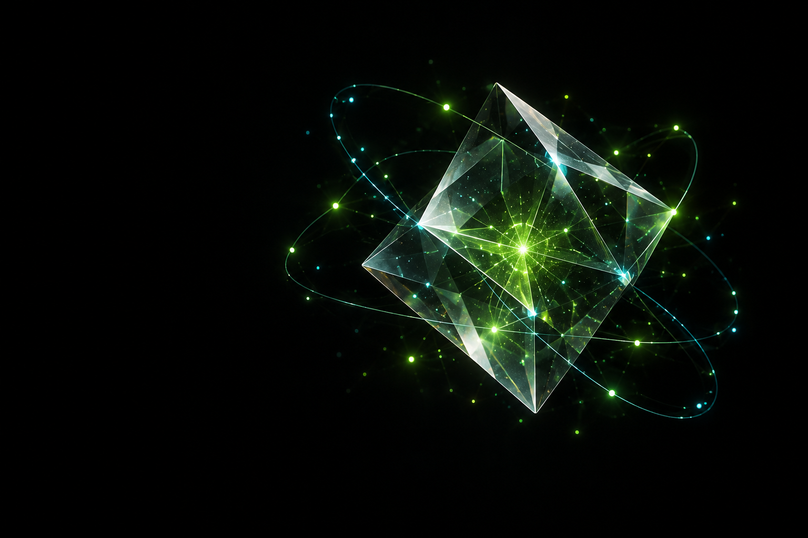
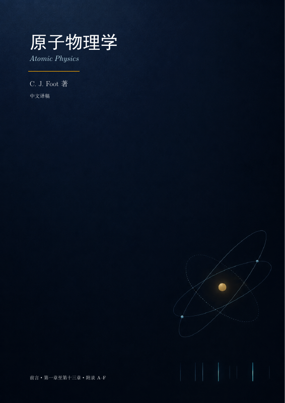

当前学习方向NV / DIAMOND
在微观之中，
寻找精确。
我正在石发展老师的课题组学习金刚石 NV 色心量子精密测量。这是我走向量子信息研究的一段起点。
研究平台金刚石 NV 色心
学习所在石发展老师课题组
PHYSICS. CURIOSITY. POSSIBILITY.
在量子世界里，
探索更精确的可能。
2025 级 大二学生
一名对物理保持好奇的学生。
关注量子信息科学，正在学习金刚石 NV 色心量子精密测量。

A WORLD OF POSSIBILITIES
从微观出发
01 / RESEARCH
从精密测量出发，走进量子信息的更多可能。
我正在石发展老师的课题组学习金刚石 NV 色心量子精密测量。这是我走向量子信息研究的一段起点。
量子计算是我的研究兴趣之一。我希望在后续的学习中，逐步理解量子计算的理论与实验，寻找自己想要深入研究的问题。
我也关注量子通信，希望在量子信息科学的学习中拓展视野，理解不同研究方向之间的联系，并持续探索这一领域。
02 / JOURNEY
从物理的启蒙，到量子信息的选择。
好奇心是起点。
每一次选择，
让方向更清晰。
2008 年 7 月出生
就读于杨振宁班
高中阶段考入少年班学院创新试点班
大学起点分流进入量子信息科学方向
专业选择进入量子信息科技英才班，继续深入学习
当前阶段03 / RECOGNITION
记录努力的刻度，也提醒自己继续向前。
物理竞赛
数学竞赛
电磁学 · 小论文
国家奖学金候选人
04 / RESOURCES
分享我借助 GPT 翻译的书籍与学习资料。

05 / BEYOND SCIENCE
物理、摄影、绘画与科幻，是我的兴趣所在。
对世界的好奇，
从一个“为什么”开始。
关注光与瞬间，
换一种方式观察世界。
以线条与色彩，
描绘感知和想象。
在科学与想象之间，
思考未来的可能。
THE NEXT CHAPTER
我有志于在量子信息领域开展研究。
保持好奇，积累知识，
让每一步学习通向更远的探索。